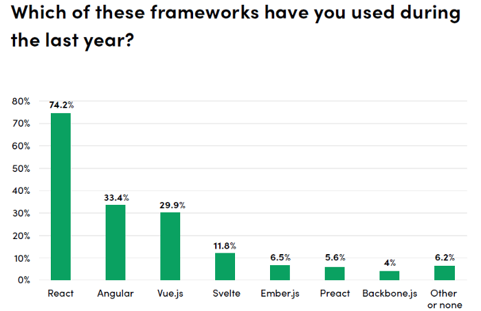

React – an open source JavaScript library for building user interfaces.
React can be used to develop single page and mobile apps.
Its goal is to provide high speed, simplicity and scalability. As a library for developing user interfaces, React is often used with other libraries such as MobX, Redux, and GraphQL.
React is the most popular javascript framework among all the rest. This is evidenced by statistics on the frequency of use of a particular framework by developers throughout the year.
In 2011, Jordan Wolk, inspired by the results of XHP, creates the React prototype, FaxJs. But FaxJs remained just an experimental project and in 2012 Jordan Wolk was already working on a React prototype.
It is worth noting that the idea of creating what would later be called React arose when the Facebook Ads team faced serious problems associated with both writing and understanding code on projects, and managing the state of the application.
In those days, it was popular to manage the state of the application thanks to mutations, as a result, with the growth of the project, it became more and more difficult to understand which action or event and at what point caused certain changes in the application.
Application behavior became unpredictable. Also, any change on the page, even a minor one, often provoked a re-rendering of the entire application. Then the idea arose to create such a tool that would take advantage of an immutable approach to data management and allow you to write code in a declarative style.
At first, the public regarded React with distrust, and some thought it was a big step back
But with the support of Facebook, Netflix, Airbnb and the release of React Native, as well as ease of learning and continuous improvement, React quickly gained public confidence and became the most popular front-end library in 2016.
Now React does not stop in its development and continues to work on improving performance, experience of interaction of programmers with the library and to this day remains the most popular front-end library and one of the best options for cross-platform projects.
Unidirectional data transfer
Properties are passed from parent to child components. Components receive properties as a set of immutable values, so a component cannot directly modify properties, but can invoke changes through callback functions. This mechanism is called "properties down, events up".
Virtual DOM
React uses virtual DOM. React creates an in-memory cache structure that allows you to calculate the difference between the previous and current state of the interface to optimally update the browser's DOM. Thus, the programmer can work with the page, assuming that it is being updated as a whole, but the library itself decides which page components need to be updated.
JSX
JavaScript XML (JSX) is a JavaScript syntax extension that allows you to use HTML-like syntax to describe the structure of an interface. Typically, components are written using JSX, but there is also the option of using regular JavaScript.
In conclusion, I want to say that React is a very good technology with great potential, and thanks to its many advantages, it is the most popular framework that continues to evolve and improve itself.